Ensemble Methods - Practical Overview#
Notes:
This session is adapted for the AIPM cohort.
Focus: choosing the right ensemble approach for product and business problems, not deriving formulas.
Notes:
“recap” in case random forests have been shown the day before.
1. Recap CART - Classification and regression trees#
CART (Classification and Regression Tree)#
General:
Finding the globally best split sequence is computationally hard.
CART uses a greedy strategy: best split now, then repeat.
At each node, CART picks the best feature and best threshold for that local split.
How split quality is measured:
Regression: pick splits that reduce average prediction error (MSE).
Classification: pick splits that increase class purity (for example with Gini impurity).

CART#
Regularisation:
pruning to avoid overfitting
Grow a full tree and then prune e.g.
max_leavesmax_depthmin_sample_size
CART - pros and cons#
| PROS | CONS |
|---|---|
| white box model - easy to interpret | not very accurate ... |
| can handle mixed data, discrete and continuous | greedy nature of constructing |
| insensitive to transformations of data... split points based on ranking | trees are unstable, small changes to the input can lead to large changes in tree structure |
| relative robust to outliers | tend to overfit (aka high variance estimators) |
Trees being unstable#
Q: Should you trust and follow a single CART?
Small data changes can produce very different tree structures and decisions.
As in investing, it is risky to put all eggs in one basket.
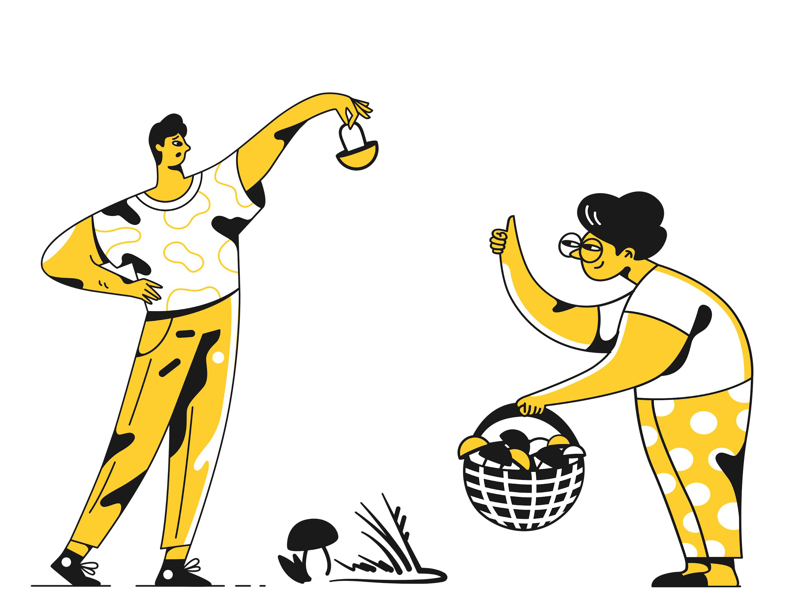
2. Trees being greedy and overfitting#
How to find out what to order at the restaurant?
Try everything!
… and then order what you liked best.Ask your friends to try something,
find out which they preferred more and try those maybe?
Q: Which do you find more feasible?
Wisdom of Crowds Theory#
Diversity of opinions
Independence of opinions
Decentralisation
Aggregation
Bagging#
Bootstrap aggregating
Train many models on different bootstrap samples, then combine predictions:
Classification: majority vote
Regression: average prediction
Training many different trees on different subsets of data chosen randomly with replacement.
Notes:
mean (instead of mode) when we have a regression problem.
Bootstrapping#
Intuition: Create many training samples from one dataset by…
…sampling with replacement
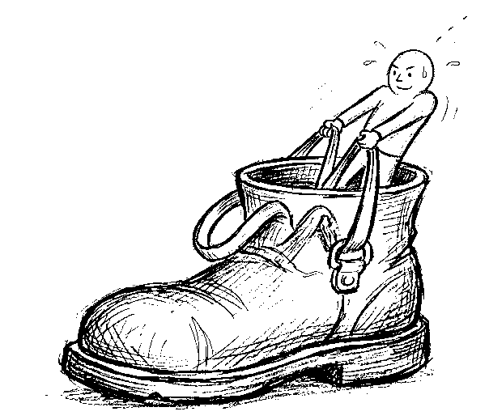
Notes:
In Random Forest, we sample observations with replacement for each tree.
We also sample a subset of features to increase model diversity.
Repeating this process creates many different trees.
Bootstrapping resamples one dataset into many simulated samples. Each sample trains one model, and predictions are aggregated by voting (classification) or averaging (regression).
Reference: https://statisticsbyjim.com/hypothesis-testing/bootstrapping/
Majority Voting - how it works#
For each observation you have different predictions from different models
You need one prediction… so you aggregate
Aggregating the different models can be done in many ways e.g. averages, mode, median
Majority Voting - how it works#
For each observation you have different predictions. How do you aggregate this to get one value?
Hard Voting#
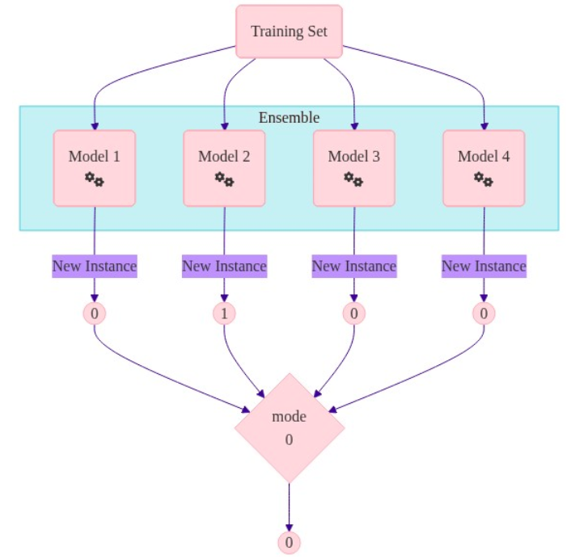
Soft Voting#
Soft voting tends to outperform hard voting.
Majority Voting - why it works#
When models make different mistakes, combining them cancels out part of the noise.
Key idea:
Averaging multiple predictions usually makes results more stable than relying on one model.
The gain is strongest when models are both:
individually better than random
not too similar to each other
If all models are highly correlated, the benefit drops.
Practical takeaway for AIPM:
More models is not automatically better.
Better diversity in models and data slices often matters more than raw model count.
A business-friendly way to explain this:
Imagine asking many analysts for the same forecast.
If each analyst has small independent errors, the average forecast is usually closer to reality.
If all analysts copy each other, you lose that benefit.
So ensemble quality depends on two levers:
Competence of each learner
Diversity across learners
Majority Voting - why it works#
Model error has three parts in practice:
bias: model is too simple for the pattern
variance: model is too sensitive to training noise
irreducible noise: randomness in the real world
Bagging and Random Forests are especially useful for reducing variance.
Notes:
Students might remember this Error Decomposition from Bias-Variance Tradeoff lesson.
While the Bias is small for decision trees, the variance gets small by using many of them (RF). Unfortunately bootstrapping can lead to correlations between the trees.
Majority Voting - why it works#
Intuition: not all classifiers fail on the same observation at the same time.
Prerequisites:
models should be better than random (weak learners)
models should be diverse (low correlation)
you need a sufficient number of learners
In classification, a weak learner performs slightly better than random guessing.
Notes:
This statement refers to weak classification learners.
In context of regression weak learners: They should at least be slightly better than simple average or simple linear regression.
Majority Voting - why it works#
What does model independence mean?
If two weak learners are highly correlated, they tend to repeat the same mistakes.
You can demonstrate this with simulation (for example, repeated coin-toss style experiments) without using formal derivations.
Example of weak learners#
If each learner is correct only slightly more than half the time, majority voting can still produce a strong ensemble.
Scenario:
1000 learners
each learner: about 51 percent accurate
Even this small edge can produce a much better combined decision.
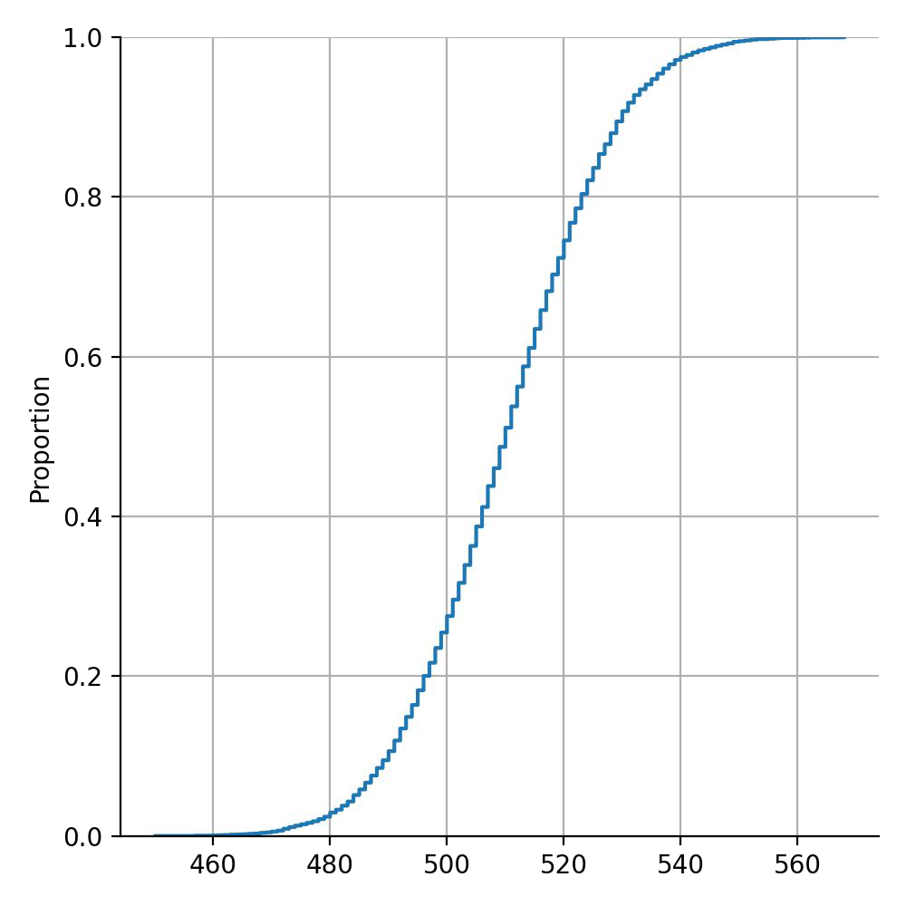
Example of weak learners#
If learner quality increases a bit more, ensemble reliability improves sharply.
Scenario:
1000 learners
each learner: about 55 percent accurate
The chance that majority voting is wrong becomes very small.
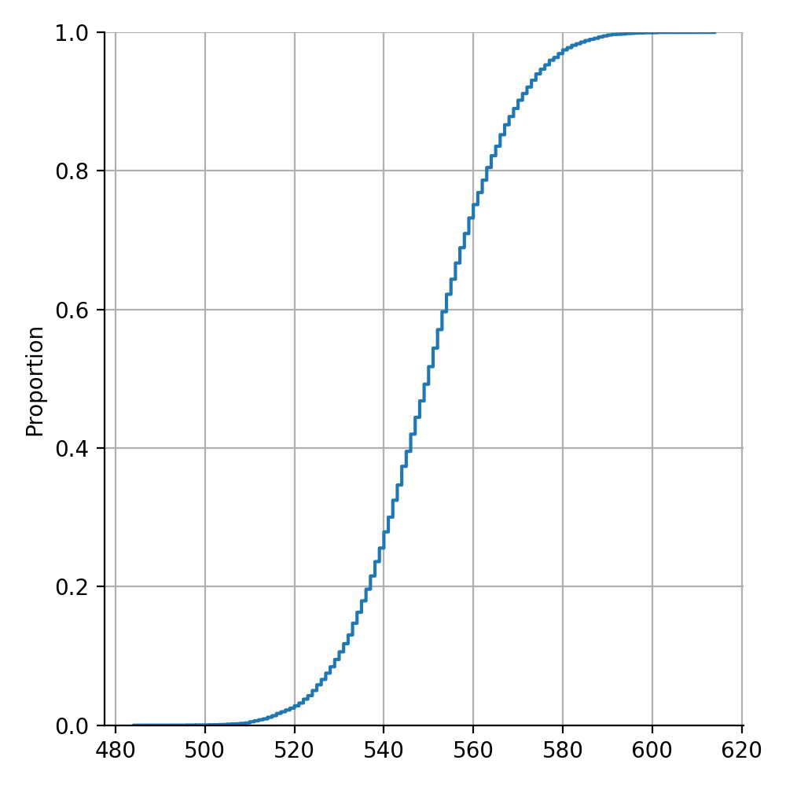
Reducing variance by aggregation#
Random forest#
Random Forest decorrelates trees by introducing randomness in both data and features.
randomly chosen subset of input variables (features)
different features are considered at different nodes
randomly chosen subset of observations
creates out-of-bag instances for validation
Random Forest usually improves predictive performance, but reduces interpretability versus a single tree.
Random Forest#
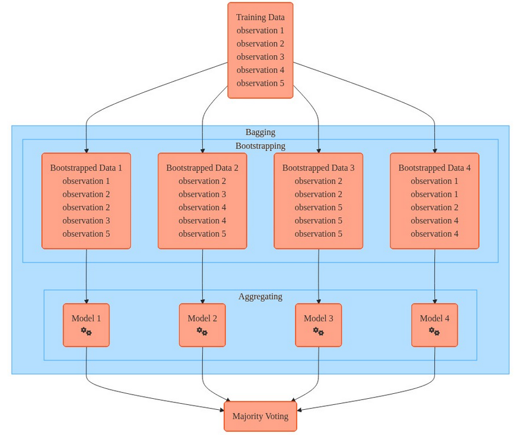
Running same learning algorithms on different subsets can result in still highly correlated predictors.
Extra-Trees - Extremely Randomized Trees#
Introduce even more randomness
For each node, random split points are generated (rather than exhaustively testing all possibilities).
The splitting point with the best outcome is used for that node.All the data in train is used to build each split (no bootstrapping).
(But like in random forest, a subset of random features is used.)The trees are usually not pruned (similar to random forest).
Notes:
(One common implementation approach.)
More random split selection can increase bias but reduce correlation and training cost.
Lower correlation improves the ensemble effect.
Overall, this can still lead to strong generalization.
In summary: ensembles reduce variance most effectively when base learners are diverse.
Accuracy vs variance#
Accuracy
Random Forest and Extra Trees outperform Decision Trees
Variance
Decision trees → high
Random Forest → medium
Extra Trees → low
Notes:
bagging helps decrease variance and reduce overfitting of base models
boosting helps decrease bias by correcting errors iteratively
stacking improves overall error by combining complementary model families
Out-of-Bag Evaluation#
For each model, there are instances that are not trained on (because of the replacement). They are called out-of-bag instances (oob).
oobs are used for evaluation without the need for a separate validation set (out of bag error)
Boosting#
Boosting builds a strong model by adding weak learners step by step.
Where:
each new learner focuses on errors made so far
later learners are trained on a reweighted or residual-focused view of the data
learners are added sequentially, not independently
decision trees are common base learners
AIPM intuition: think of iterative error-correction, where each round targets what the previous round missed.
Boosting algorithm#
INIT
Start with equal weight for all training instances.
LOOP
Increase attention on previously mispredicted cases (or residuals).
Train the next learner.
Combine all learners into one weighted prediction.
Boosting#
We do not go back and adjust earlier parameters → method is called forward stagewise additive modeling
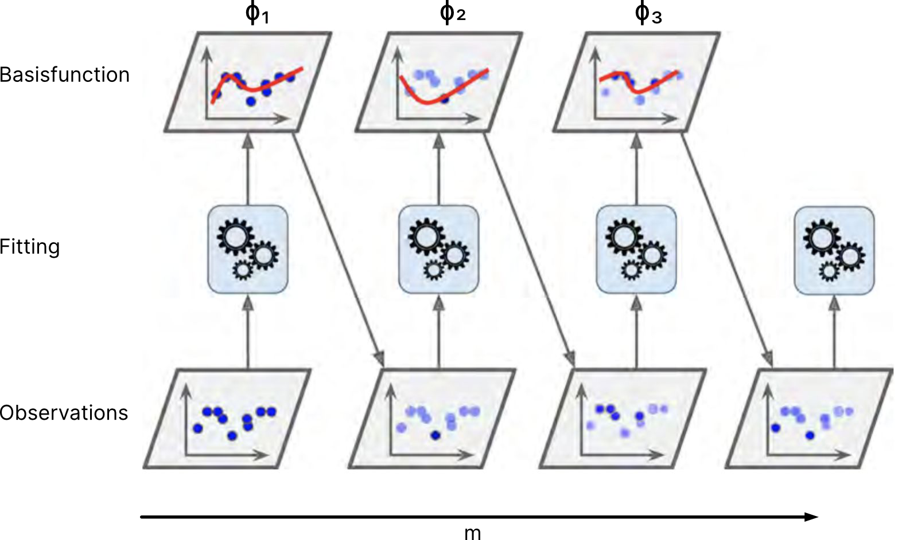
Notes:
Compared with bagging, boosting does not train all models independently.
Instead, each new learner focuses on what previous learners missed.
Instance weighting and learner weighting are related but distinct concepts.
Well-known Boosting Algorithms#
Algorithm |
Key Characteristics |
Pros |
Cons |
|---|---|---|---|
AdaBoost |
- Focuses on misclassified samples |
- Simple and intuitive |
- Sensitive to noisy data and outliers |
Gradient Boosting |
- Instead of weighing difficult datapoint, GB cares for the residuals |
- Flexible and versatile |
- Can be slow to train |
XGBoost |
- Regularized form of Gradient Boosting |
- Fast and efficient (parallelization) |
- Can be memory-intensive |
LightGBM |
- Uses histogram-based algorithms |
- Fast training and prediction |
- May overfit on small datasets |
CatBoost |
- Handles categorical features automatically |
- Excellent performance on categorical data |
- Can be slower than other algorithms |
Notes:
In boosting, difficult instances often get higher importance in later rounds.
How learner outputs are weighted depends on the algorithm:
AdaBoost weights learners by individual performance.
Gradient Boosting adds learners to reduce residual error step by step.
Choose among algorithms based on data type, compute budget, and tuning capacity.
Stacking#
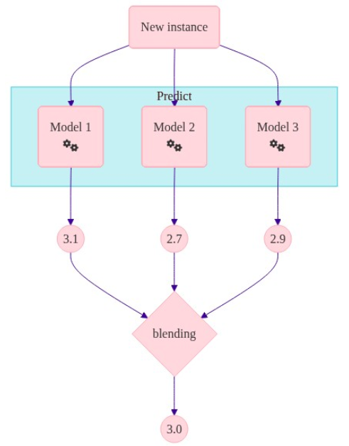
Notes:
Base models generate predictions from training data.
These predictions become new features for a final model (meta-learner).
To avoid leakage, do not train the meta-learner on predictions from the same rows used to train base models.
Use either:
a holdout set (blending), or
out-of-fold predictions from cross-validation.
Ensemble Learning: Leveraging Multiple Perspectives#
A collection of models working together to produce a single, stronger prediction.
Key Strategies:
Bagging: trains independent models on random subsets to reduce variance.
Boosting: trains sequentially to correct errors and reduce bias.
Stacking: combines different model families with a meta-learner.
Ensemble Learning: Leveraging Multiple Perspectives#
AIPM selection guide:
Use Bagging / Random Forest for fast, strong tabular baselines with lower overfitting risk.
Use Extra Trees when you want speed and strong variance reduction.
Use Boosting when top predictive performance matters and tuning time is available.
Use Stacking when you already have several good but different models.
Core advantages:
better robustness
better generalization
less dependence on one model’s blind spots
Notes:
This overview slide helps students reset the mental map after finishing bagging and before moving into boosting.
Quick Comparison: Which Ensemble Should I Use?#
Technique |
Best when |
Strengths |
Trade-offs |
|---|---|---|---|
Bagging / Random Forest |
You need a strong baseline fast on tabular data |
Stable, robust, low tuning effort, handles nonlinearity |
Less interpretable than one tree; can be large |
Extra Trees |
You want faster training and lower variance |
Very fast, strong variance reduction, good default behavior |
Slightly higher bias than Random Forest in some cases |
Gradient Boosting family |
You need top predictive performance |
Often best accuracy on structured data; flexible objectives |
More tuning, longer training, easier to overfit |
XGBoost / LightGBM / CatBoost |
You have medium-to-large data and care about leaderboard-level quality |
Efficient implementations, advanced regularization, strong practical performance |
Tool choice and tuning complexity increase |
Stacking |
You already have several diverse good models |
Can improve performance by combining complementary strengths |
Higher complexity, stricter validation setup, harder to debug |
AIPM rule of thumb:
Start with Random Forest as your baseline.
Move to boosting when baseline quality is not enough.
Use stacking only when the extra complexity is justified by business impact.
Methods based on the values of the probabilities need to return calibrated probabilities.
Notes:
Classifiers output probabilities, but those probabilities are often not perfectly calibrated.
Calibration maps raw model confidence to probabilities that better match observed outcomes.
Core idea: for a well-calibrated model, predictions around a given confidence level should be correct at about that same frequency.
Calibrated probabilities#
Fitting a regressor (called a calibrator) that maps the output of the classifier (decision_function or predict_proba) to a calibrated probability in [0, 1]
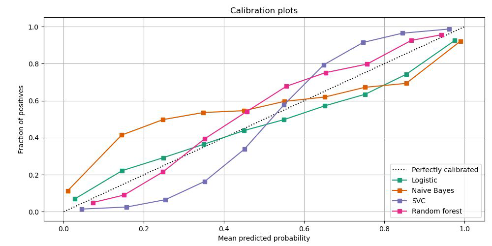
Notes:
Calibration workflow:
Collect predicted probabilities and true labels.
Group predictions into probability bins.
Compare predicted confidence with observed positive rate in each bin.
Fit a calibrator to map raw probabilities to calibrated probabilities.
Frequency of predicted probabilities#
confidence and falsehood vs. shyness and correctness
example
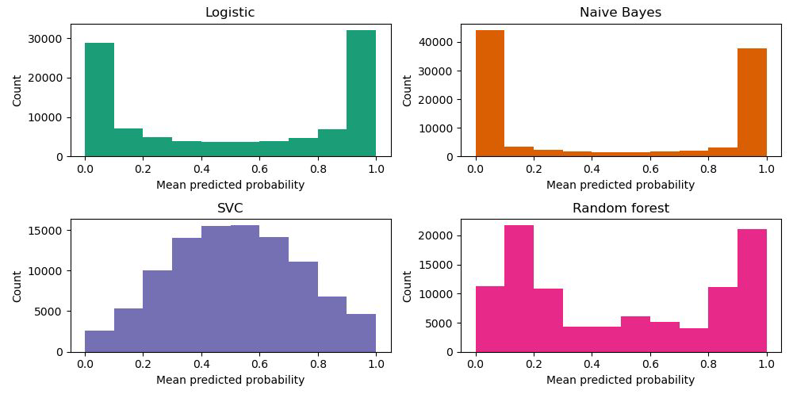
Notes:
This chart shows how often each classifier predicts different confidence levels.
It is related to model behavior, not calibration quality by itself.
U-shaped curves: more confident predictions.
Mountain-shaped curves: more cautious predictions around 50-50.
Interpreting black box models (like ensemble models)#
Linear models are popular due to interpretability, but poor performance
Conclusions on the importance of a variable should be based on models with good accuracy
Some of the approaches for measuring the effect of variables:
partial dependence plot
permutation feature importance
Notes:
Why discuss interpretability here? Ensemble methods are often black-box models, but we still need feature-level insight for product decisions.
Two practical tools shown here are partial dependence plots (PDP) and permutation feature importance (PFI).
Partial dependence plots - Pros#
Intuitive: the partial dependence function at a particular feature value represents the average prediction if we force all data points to assume that value
causal interpretation (for the model)
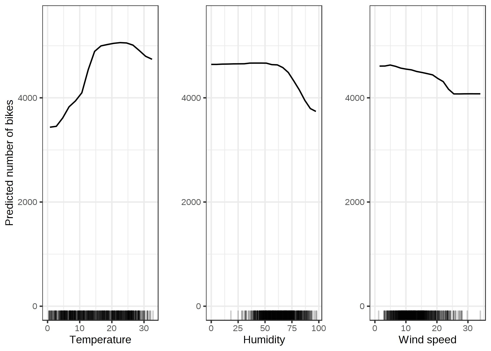
Notes:
Train the model.
Set one feature to a fixed value across all rows.
Predict and average the output.
Repeat this across many values of that feature.
Repeat for other features.
This reveals how model predictions change as a feature value changes, while averaging over the rest.
Partial dependence plots - Cons#
maximum 2 features per plot
assumption of independence between features
Some PDPs omit showing feature value distribution, risking misinterpretation.
Permutation feature importance - Pros#
nice interpretation: the loss if the feature is removed
it takes into account the interaction with other features
does not require retraining the model
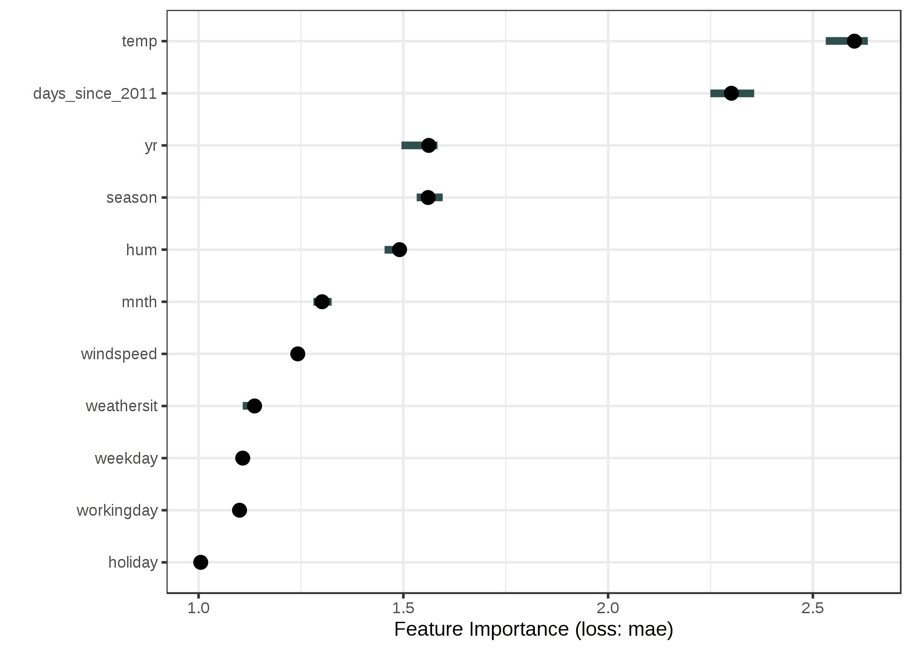
Notes:
Evaluate baseline model performance (for example, accuracy or MSE).
Shuffle one feature column.
Re-evaluate performance and measure the drop.
Repeat several times for stability.
Larger performance drops indicate more important features.
Permutation feature importance - Cons#
linked to the error of model
doesn’t deal well with correlated features
lacks directional insight
Notes:
“Linked to model error”: if the model underfits or overfits, PFI can be misleading.
“Lacks directional insight”: PFI shows importance magnitude, but not whether increasing a feature pushes predictions up or down.
References#
Machine learning a probabilistic perspective - Kevin p. Murphy